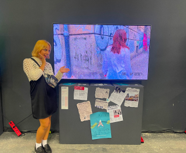

Neverlost
Mentors: Andrea Hercog, Nina Pavlinek
Collaborators: Jasmina Isaković,
Goran Ferčec
Industrial design 2
2023.
Have you ever been lost in the city? The feeling of fear, anxiety, and uncertainty as you wander
without a sense of direction. The maps on your phone don’t seem to cooperate, and you feel
somewhat awkward as you keep going in circles, trying to find your way. The speculative service
NeverLost utilizes magnetic pathways to provide people with intuitive orientation, inspired by
the natural sense of magnetoreception found in animals.
The project is portrayed with a satirical approach through the use of a commercial brand and
promotional materials such as brochures generated by artificial intelligence. Newspaper articles
from a potential future and devastated promotional posters create a juxtaposition between the
marketing approach and the actual implications of the technology.
The project prompts contemplation on the ethical and philosophical implications of technological
advancement. One of the key aspects of the research is the question of what happens when
technology becomes directly connected to the human body, in this case through a chip in the
motor cortex. When our movement is made so effortless that we no longer have to think about
where we’re going, our navigation becomes purely pragmatic. However, this raises the question:
do we lose the poetics and humanity of getting lost? Is it humane to integrate technology into
our bodies, even if its purpose is to make our lives easier?
Newspaper articles and destroyed posters from potential future show the possible downsides
of
the introduced technology: like hacking, addiction and protest against technology.
The video portrays a real-time commercial for Neverlost being hacked, displaying glimpses of
a
potential future where individuals using the chip-enabled Neverlost technology are
documented.
These clips reveal a disturbing and uncanny side to the use of this technology, showcasing
glitches and unsettling aspects of its integration with the human body. The hacked
commercial
offers a haunting glimpse into the possible repercussions and darker aspects of relying on
such
advanced technological enhancements.

The work was exhibited at Zagreb design week 2023. amongst finalists in the category of
design of social inovations
Design school annual award 2023.